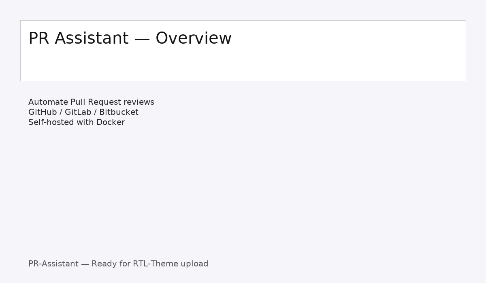
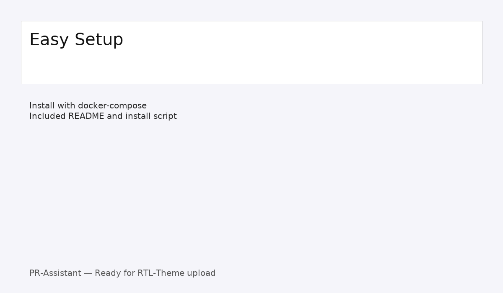

معرفی:
PR Assistant یک دستیار خودمیزبان برای بررسی Pull Request است که با استفاده از هوش مصنوعی نکات امنیتی و استایل کدنویسی را بررسی میکند.
نحوهٔ اجرای سریع (Local demo):
- این پوشه را باز کنید و فایل
demo_index.html را در مرورگر باز کنید.
- برای اجرای سرویس واقعی، از README_PRODUCTION.md و docker-compose.yml استفاده کنید.
اسکرینشاتها:


مثال درخواست فعالسازی لایسنس:
http://your-host/path/to/license.php?action=activate&key=YOUR_KEY&domain=example.com